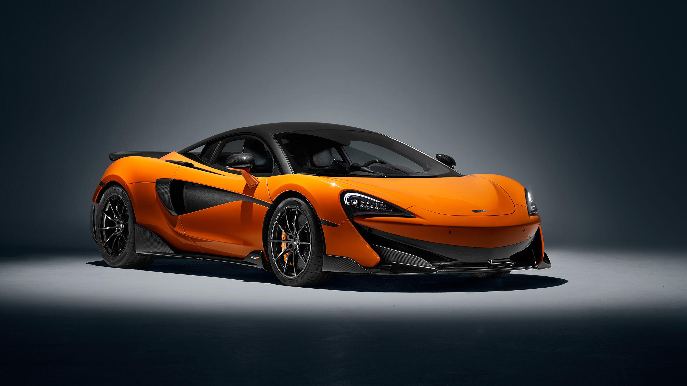
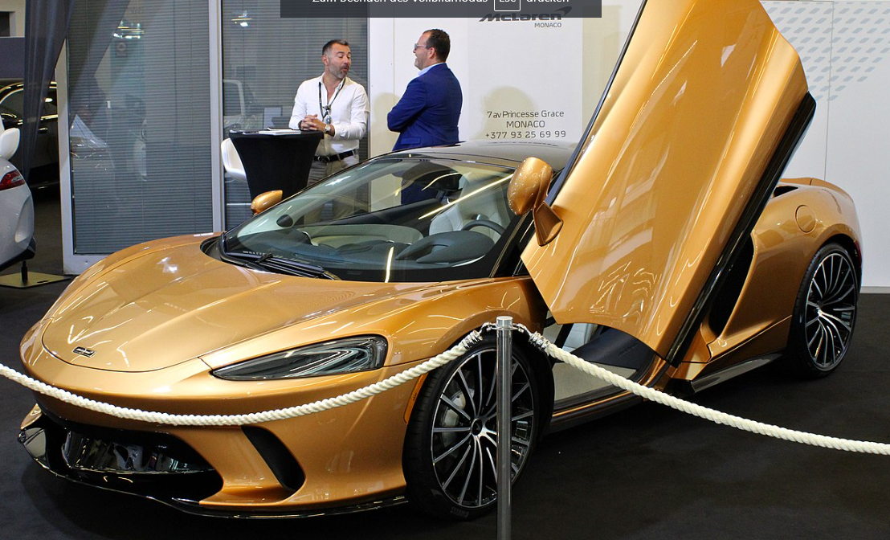
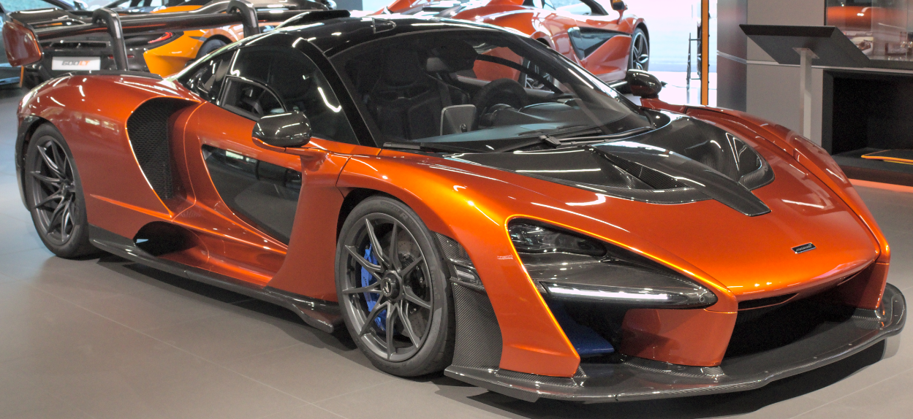
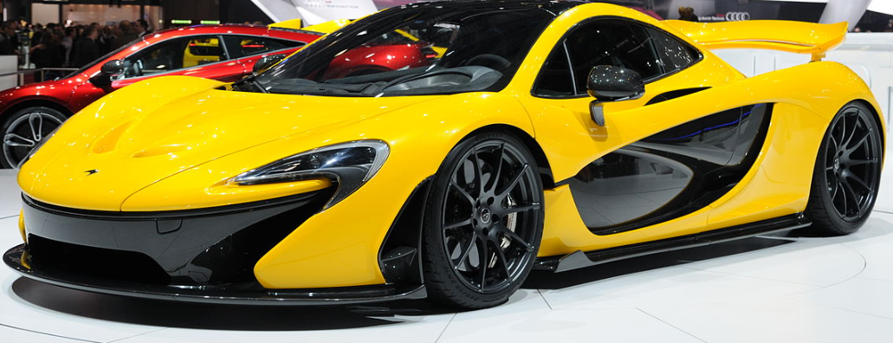
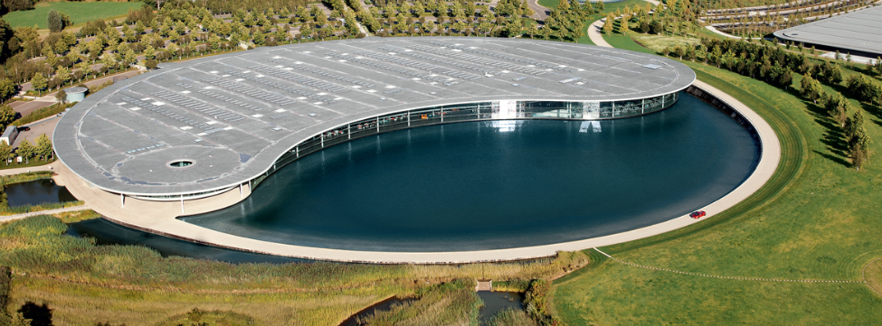
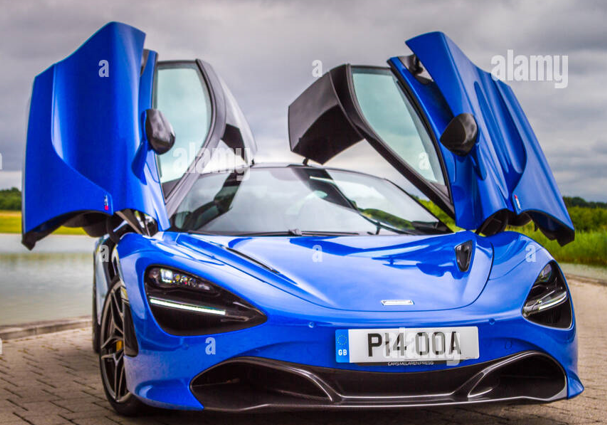
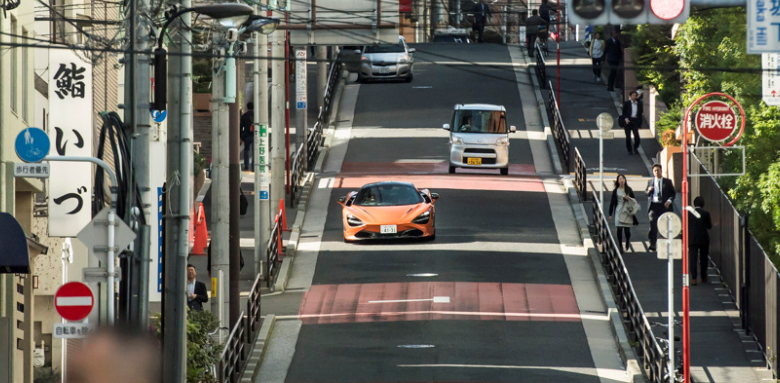

McLaren:
McLaren Automotive Ltd. ist ein britischer Hersteller von Sportwagen in Kleinserie und eine
Tochtergesellschaft der McLaren Group.
Gründer:
Ron Dennis
Gründung:
2010, Woking, Vereinigtes Königreich
Hauptsitz:
Woking, Vereinigtes Königreich
Tochtergesellschaft:
McLaren Automotive, Inc.
Dachorganisation:
McLaren Group
Geschichte:
McLaren Automotive ging 1989 aus dem Rennstall McLaren Racing als McLaren Cars hervor. Das erste Projekt war der
von 1993 bis 1997 produzierte F1. Von 2003 bis 2009 wurde in Kooperation mit Mercedes-Benz der SLR McLaren in den
Werken in Portsmouth und Woking hergestellt. Im September 2009 wurde die Eigenentwicklung MP4-12C und im April
2014 das auf dem 12C basierende Modell 650S vorgestellt, der das erste Modell der neu gegründeten Super Series
wurde.
McLaren Formula 1 Team:
McLaren ist ein britischer Automobilhersteller und Rennsportteam, das in der Formel 1 aktiv ist. Das Team wurde
1963 von Bruce McLaren gegründet und hat seinen Sitz in Woking, England. Im Laufe der Jahre hat McLaren
zahlreiche Erfolge in der Formel 1 errungen, darunter 8 Konstrukteurstitel und 12 Fahrertitel. Das Team hat auch
an anderen Rennserien teilgenommen, darunter der IndyCar Series und der World Endurance Championship. In jüngerer
Zeit hat McLaren auch seine Aktivitäten in den Bereichen Straßenfahrzeuge und Elektroautos ausgeweitet.
McLaren Formula 1 Team Statistik:
In der Formel 1 hat McLaren eine beeindruckende Bilanz erzielt. Das Team hat insgesamt 8 Konstrukteurstitel
gewonnen, wobei der letzte Titel 1998 errungen wurde. McLaren hat auch 12 Fahrertitel gewonnen, wobei der letzte
Titel von Lewis Hamilton im Jahr 2008 errungen wurde. Insgesamt hat das Team 182 Grand-Prix-Siege errungen, was
es zu einem der erfolgreichsten Teams in der Geschichte der Formel 1 macht. McLaren hat auch viele andere Erfolge
in der Formel 1 errungen, darunter 153 Pole-Positions und 799 Podestplätze. Das Team hat auch mehr als 1700 Punkte
in der Konstrukteurswertung erzielt und hat insgesamt mehr als 7000 Runden in Führung absolviert. In den letzten
Jahren hat McLaren jedoch Schwierigkeiten gehabt, seine früheren Erfolge zu wiederholen. Das Team hat in den
letzten Jahren meistens im Mittelfeld gekämpft und es hat einige Zeit gedauert, bis es wieder in der Lage war,
regelmäßig Punkte zu holen und sich für das Podium zu qualifizieren. Trotzdem bleibt McLaren eine der bekanntesten
und erfolgreichsten Mannschaften in der Formel 1 und hat sich in jüngerer Zeit darauf konzentriert, seine
Leistungen zu verbessern und wieder in die vorderen Ränge zu kommen.
Modelle
Sportwagen
-
McLaren 720S

Preis:
- 247.350 € - 273.000 €
Leistung:
- 720 PS (529 KW)
Geschwindigkeit:
- 341 km/h
Beschleunigung:
- 0-100 km/h in 2,9 s
-
McLaren GT

Preis:
- 198.000 € - 225.000 €
Leistung:
- 620 PS (456 KW)
Geschwindigkeit:
- 326 km/h
Beschleunigung:
- 0-100 km/h in 3,2 s
Supercars
-
McLaren Senna

Preis:
- 1.333.291 € - 1.435.328 €
Leistung:
- 800 PS (588 KW)
Geschwindigkeit:
- 335 km/h
Beschleunigung:
- 0-100 km/h in 2,8 s
-
McLaren P1

Preis:
- 2.899.900 € - 2.910.000 €
Leistung:
- 916 PS (674 KW)
Geschwindigkeit:
- 350 km/h
Beschleunigung:
- 0-100 km/h in 2,8 s
Händler
Unsere Händler befinden sich in folgenden Städten:
- London
- Syrien
- Tokio

McLaren in London:
McLaren is a British automaker and racing team based in Woking, Surrey, England. The company was founded in 1963 by Bruce McLaren, a New Zealand-born racing driver and engineer. McLaren is best known for its Formula One team, which has won a number of world championships, and for its high-performance sports cars and supercars. The company also has a successful history in other forms of motorsports, including IndyCar, Le Mans, and Can-Am. In addition to its racing and automotive divisions, McLaren also has a technology division that focuses on creating innovative products and solutions in a variety of industries, including aerospace, defense, and healthcare.

McLaren in Syrien:
شركة مكلارين هي شركة عالمية متخصصة في صناعة السيارات الجديدة والدعم التقني للسيارات الجارية. وتمثل مكلارين نقطة الانطلاق المثالية للمتعة القيادة والأداء العالي، وتعد شركة مكلارين من الشركات الرائدة في مجال السيارات السريعة والعصرية.تأسست شركة مكلارين في عام 1963 من قبل برون بيل كير وتوم مكلارين، وتعتبر شرك مكلارين من الشركات الرائدة في مجال صناعة السيارات الدفع الرباعي والدفع الرباعي الهوائي. وتشتهر شركة مكلارين أيضًا بصناعة السيارات الفاخرة والعصرية، وتعتبر من الشركات الرائدة في مجال المحافظة على البيئة والتكنولوجيا الأمنية في السيارات. وتعمل شركة مكلارين في مجالات متعددة، وتشمل التصميم والتطوير والإنتاج والتسويق والمبيعات للسيارات الجديدة، وكذلك الدعم التقني للسيارات الجارية. وتعمل شركة مكلارين في مجالات مختلفة من صناعة السيارات، وتشمل السيارات الدفع الرباعي والدفع الرباعي الهوائي، والسيارات العصرية والفاخرة.

McLaren in Tokio:
マクラーレンは、イギリスの豪華スポーツカーメーカーです。イノベーションとパフォーマンスに長けた歴史を持つ会社です。東京でも、 マクラーレンは強い存在を持っています。市内には、数店舗のマクラーレンディーラーがあります。これらのディーラーでは、 720SやGTなど、幅広いマクラーレン車を販売しています。車の販売だけでなく、東京のマクラーレンでは、マクラーレン車のメンテナン スや修理サービスも提供しています。会社の優秀な技術者たちは、これらの高性能車をスムーズに運転させるための専門知識と経験を持っ ています。新しいマクラーレンを探しているのか、単に現在の車をサービスしたいだけなのか、東京のマクラーレンであればどちらでも 揃います。優秀さと品質の評判で知られるマクラーレンは、東京地域の豪華スポーツカー愛好家の選択を受け入れることでしょう.